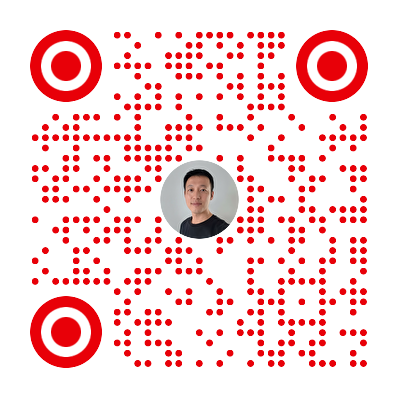

开发者专属 · 100% 免费文档
OpenCode 免费从入门到精通
专为开发者打造的终极文档指南。从环境配置到构建自定义 AI 智能体，这套免费教程将帮助您掌握下一代编程工具，提升 3 倍开发效率。
(1,240 评分) · 10,000+ 开发者加入

📕 小红书
关注获取更多技巧
💬 微信
加我拉你进群
多平台支持
支持终端TUI、Web界面、桌面应用和主流IDE扩展，随时随地编程。
75+提供商
支持Anthropic、OpenAI、Google、Azure等75+LLM提供商，自由选择模型。
强大工具集
内置bash、文件编辑、代码搜索、LSP等13+工具，满足各种开发需求。
高度可定制
灵活的配置系统，自定义Agents、主题、快捷键、权限等。
Agents系统
智能代理系统，支持Build、Plan等多种专业代理，提升开发效率。
开源免费
完全开源的AI编程助手，社区驱动，持续更新迭代。
快速安装
使用安装脚本一键安装 OpenCode：
curl -fsSL https://opencode.ai/install | bash或使用包管理器安装：
# npm
npm install -g opencode
# Homebrew (macOS)
brew install opencode
# pnpm
pnpm add -g opencode
安装完成后，运行 opencode 命令即可启动。
查看详细安装指南 →